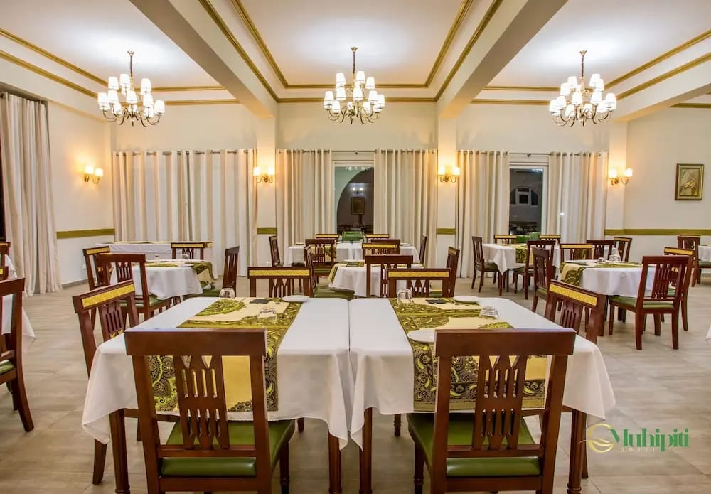

Hotéis
Conforto e hospitalidade moçambicana

⭐ 4.7Hotel Omuhipity
Ilha de Moçambique
Hotel moderno e acolhedor em Nampula. Quartos confortáveis, piscina, restaurante e Wi-Fi gratuito. Ideal para lazer e negócios.
 ⭐ 5.0
⭐ 5.0
Ilha Paradise Resort
Ilha de Moçambique
Resort boutique em edifício histórico restaurado. Experiência única com charme colonial.
 ⭐ 4.8
⭐ 4.8
Nacala Beach Lodge
Praia de Nacala
Lodge à beira-mar com bangalôs privativos. Acesso direto à praia e atividades aquáticas.
 ⭐ 4.7
⭐ 4.7
Namuli Mountain Lodge
Monte Namuli
Eco-lodge nas montanhas com trilhos e observação de aves. Perfeito para aventureiros.